Strekkode i regnskapssammenheng er en maskinlesbar kode som består av parallelle linjer eller geometriske mønstre som representerer informasjon digitalt. I moderne regnskapsførsel brukes strekkoder for å automatisere og effektivisere håndtering av fakturaer, lager, og økonomiske transaksjoner gjennom rask og nøyaktig dataregistrering.
Seksjon 1: Grunnleggende om Strekkoder i Regnskap
1.1 Definisjon og Funksjon
Strekkoder representerer en revolusjonerende teknologi for automatisk dataregistrering i regnskapsføring:
- Automatisk identifikasjon av produkter, tjenester og dokumenter
- Reduserte feil sammenlignet med manuell dataregistrering
- Økt effektivitet i bokføring og lagerbehandling
- Sanntidsoppdatering av regnskapsdata
- Integrerte løsninger med regnskapssystemer
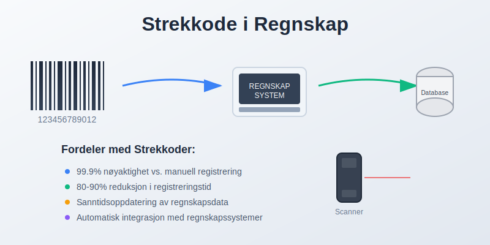
1.2 Tekniske Komponenter
En strekkode består av flere elementer:
- Stille soner: Tomme områder før og etter koden
- Start/stopp-tegn: Markerer begynnelse og slutt
- Dataområde: Selve informasjonen kodet som streker
- Kontrollsiffer: Sikrer dataintegritet og oppdager feil
- Menneskelig lesbar tekst: Backup for manuell registrering
Seksjon 2: Typer Strekkoder i Regnskapsarbeid
2.1 Endimensjonale (1D) Strekkoder
Tradisjonelle lineære strekkoder med bred anvendelse:
| Type | Anvendelse | Kapasitet | Fordeler |
|---|---|---|---|
| EAN-13 | Detaljhandel, fakturering | 13 siffer | Global standard, bred støtte |
| Code 128 | Logistikk, intern ID | Alfanumerisk | Høy datadensitet, fleksibel |
| Code 39 | Industri, inventar | Alfanumerisk | Enkel implementering |
| PDF417 | Dokumenter, rapporter | 1800 tegn | Høy kapasitet, feilkorreksjon |
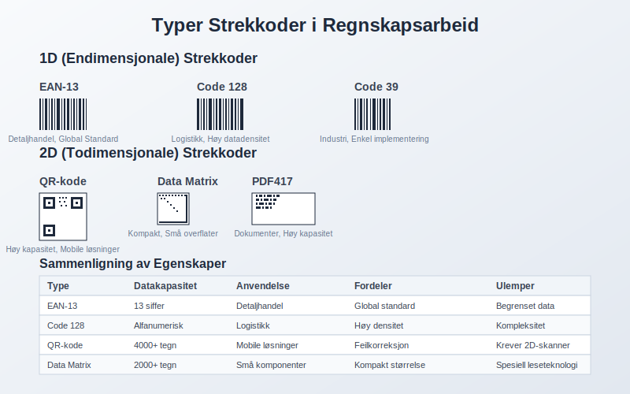
2.2 Todimensjonale (2D) Strekkoder
Avanserte løsninger for kompleks informasjon:
- QR-koder: Rask tilgang til detaljert informasjon
- Data Matrix: Kompakt lagring på små overflater
- Aztec-koder: Mobile betalingsløsninger
- MaxiCode: Logistikk og frakt-tracking
2.3 Spesialiserte Regnskapskoder
Bransjespesifikke løsninger:
- OCR-linjer: Betalingsformidling og fakturaer
- GTIN-koder: Global produktidentifikasjon
- UPC: Nordamerikansk detaljhandel
- ISBN: Bøker og publikasjoner
Seksjon 3: Implementering i Regnskapssystemer
3.1 Teknisk Infrastruktur
Grunnleggende komponenter for strekkodeintegrasjon:
- Skannere og lesere: Håndholdte, faste eller mobile enheter
- Software-integrasjon: Kobling med regnskapssystemer
- Database-tilkobling: Automatisk oppdatering av hovedbok
- Kvalitetskontroll: Internkontroll og feilhåndtering
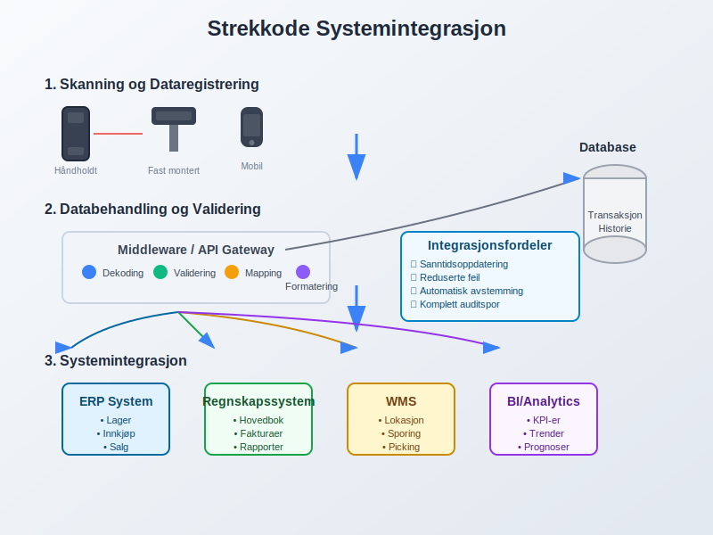
3.2 Automatiserte Arbeidsflyter
Strømlinjeformede prosesser gjennom strekkodeteknologi:
Innkjøpsprosess:
- Strekkodeskanning ved varelevering
- Automatisk matching mot bestillinger
- Lagertilgang og verdsettelse
- Fakturacontrol og godkjenning
Salgsprosess:
- Produktregistrering ved salg
- Automatisk lagerutgang
- Fakturagenerering
- Regnskapsføring av omsetning
3.3 Integrasjon med ERP-systemer
Sømløs sammenkobling av forretningsprosesser:
- Sanntidsoppdatering av balansen
- Automatisk avstemming av lagerkontoer
- Kostnadsporing og budsjettering
- Rapportering og prognose
Seksjon 4: Praktiske Anvendelser
4.1 Lagerforvaltning og Varebeholdning
Strekkoder revolusjonerer lagerstyring:
- Sanntidsoversikt over varebeholdning
- Automatisk verdsettelse etter FIFO, LIFO eller gjennomsnitt
- Sporingsfunksjonalitet for serienumre og utløpsdatoer
- Minimum lager-varsler og automatisk bestillingsfunksjoner
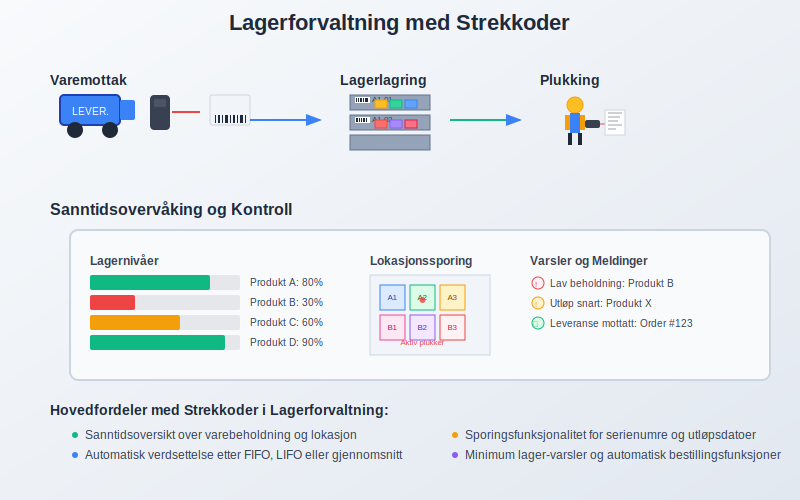
4.2 Faktura- og Dokumenthåndtering
Effektivisering av administrative prosesser:
- Automatisk fakturaregistrering fra skannede strekkoder
- Kobling til leverandørdata og kontoplaner
- Digital arkivering med søkbar metadata
- Attestering og godkjenningsflyt
4.3 Anleggsmidler og Inventar
Systematisk håndtering av anleggsmidler:
- Unique Asset IDs for hver gjenstand
- Avskrivning-tracking og levetidsstyring
- Flytting og lokasjonssporing
- Vedlikeholdshistorikk og kostnadssporing
Seksjon 5: Fordeler og Gevinster
5.1 Operasjonelle Fordeler
Konkrete forbedringer for regnskapsarbeid:
- Feilreduksjon: 99.9% nøyaktighet vs. 1 feil per 300 tegn manuelt
- Tidsbesparelse: 80-90% reduksjon i registreringstid
- Forbedret arbeidskapital: Bedre lagerstyring og cash flow
- Reduserte personalkostnader: Automatisering av rutineoppgaver
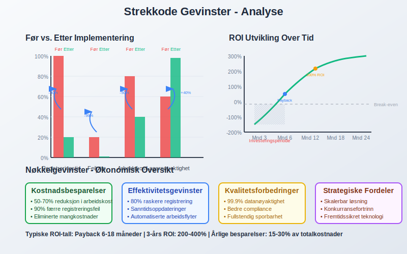
5.2 Kvalitetsforbedringer
Høyere standarder i regnskapsføring:
- Konsistent dataregistrering og standardisering
- Sanntidsrapportering for bedre beslutningsgrunnlag
- Forbedret internkontroll og sporbarhet
- Compliance med bokføringsloven
5.3 Strategiske Fordeler
Langsiktig verdi for organisasjonen:
- Skalerbarhet: Enkel ekspansjon og vekst
- Datakvalitet: Pålitelig grunnlag for analyser
- Kundetilfredshet: Raskere service og levering
- Konkurransefortrinn: Effektive prosesser og lavere kostnader
Seksjon 6: Kostnader og Investeringer
6.1 Implementeringskostnader
Budsjettmessige hensyn ved innføring:
| Komponent | Kostnadsområde | Estimat (NOK) |
|---|---|---|
| Strekkodeskannere | Hardware | 500 - 15,000 |
| Software-lisenser | Programvare | 2,000 - 50,000 |
| Systemintegrasjon | Utvikling | 10,000 - 200,000 |
| Opplæring | Kompetanse | 5,000 - 25,000 |
| Etiketter og forbruk | Drift | 1,000 - 10,000/år |
6.2 Driftskostnader
Løpende utgifter og vedlikehold:
- Lisensavgifter for software og oppdateringer
- Forbruksmateriell som etiketter og ribboner
- Vedlikehold av skannere og utstyr
- Support og teknisk assistanse
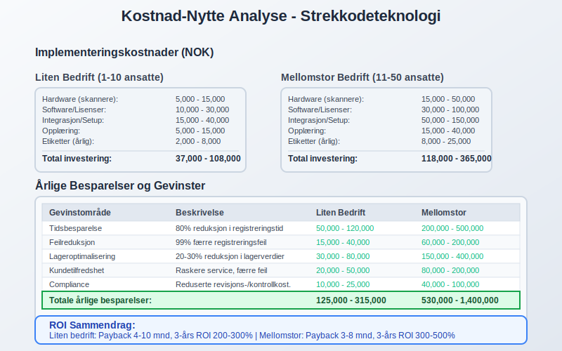
6.3 Return on Investment (ROI)
Beregning av lønnsomhet:
Besparelser:
- Redusert arbeidstid ved registrering
- Færre feil og korrigeringer
- Bedre lagerstyring og mindre svinn
- Automatiserte avstemminger
Payback-tid: Typisk 6-18 måneder avhengig av størrelse og kompleksitet
Seksjon 7: Juridiske og Regulatoriske Aspekter
7.1 Compliance-krav
Overholdelse av regelverk og standarder:
- Bokføringsloven: Krav til sporbarhet og dokumentasjon
- MVA-regelverk: Korrekt behandling av avgifter
- Produktansvar: Sporbarhet ved tilbakekallingen
- GDPR: Personvern ved kundedata
7.2 Revisjonsspor og Dokumentasjon
Sikre revisjonsstan darer:
- Komplett auditspor fra skanning til hovedbok
- Tidsstempling av alle transaksjoner
- Brukerlogging og ansvarssporing
- Backup og gjenoppretting av kritiske data
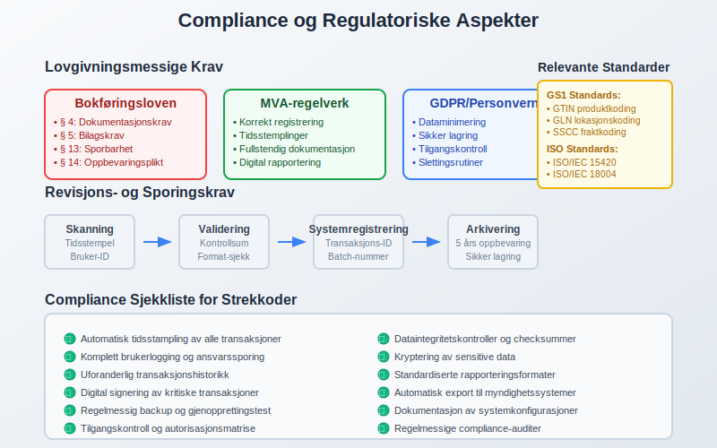
7.3 Standarder og Sertifiseringer
Bransjestandarder for strekkoder:
- GS1-standarder: Global harmonisering
- ISO/IEC 15420: Code 128 spesifikasjon
- ISO/IEC 18004: QR-kode standard
- AIAG: Automobilindustriens krav
Seksjon 8: Beste Praksis og Implementering
8.1 Planleggingsfase
Systematisk tilnærming til innføring:
Behovsanalyse:
- Kartlegging av eksisterende prosesser
- Identifikasjon av forbedringspotensial
- Vurdering av tekniske krav
- Kostnad-nytte-beregninger
Designfase:
- Valg av strekkodeteknologi
- Systemarkitektur og integrasjon
- Arbeidsflytdesign
- Opplæringsplan
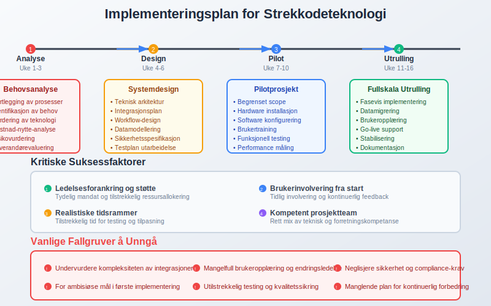
8.2 Pilotprosjekt
Testfase før full utrulling:
- Begrenset scope med 1-2 produktkategorier
- Grundig testing av alle funksjoner
- Brukerfeeback og justeringer
- Performance-måling og optimalisering
8.3 Fullskala Implementering
Systematisk utrulling:
- Fasevis innføring etter produktområder
- Omfattende opplæring av alle brukere
- Kontinuerlig support og feilsøking
- Regelmessig evaluering og forbedring
Seksjon 9: Teknologiske Trender
9.1 Mobile Løsninger
Smarttelefoner som skannerverktøy:
- App-baserte skannerfunksioner
- Cloud-integrasjon for sanntidsoppdatering
- Offline-modus for områder uten nettverkstilgang
- GPS-logging for lokasjonssporing
9.2 AI og Maskinlæring
Intelligente forbedringer:
- Automatisk bildegenkjenning uten fysiske etiketter
- Prediktiv vedlikehold av skannerutstyr
- Anomaldeteksjon ved transaksjonsregistrering
- Kvalitetsoptimalisering av strekkodeutskrift
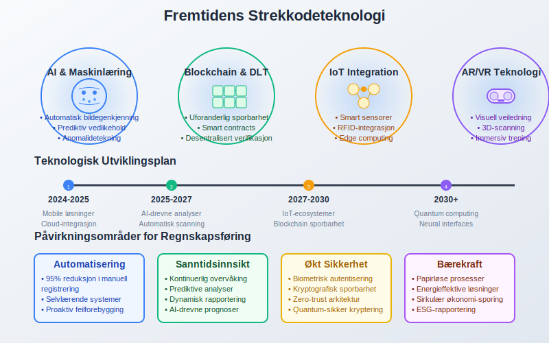
9.3 Internet of Things (IoT)
Tilkoblede løsninger:
- Smart-sensorer for automatisk registrering
- RFID-integrasjon for kontaktløs scanning
- Blockchain-sporbarhet for kritiske varer
- Edge computing for rask lokal prosessering
Seksjon 10: Bransjespesifikke Anvendelser
10.1 Detaljhandel og E-handel
Spesialiserte løsninger for handelsbedrifter:
- Point-of-Sale integrasjon
- Lagerrotasjon og FIFO-håndtering
- Kundelojalitetsprogrammer
- Retursporingen og refusjoner
10.2 Produksjonsbedrifter
Manufacturing-spesifikke behov:
- Work-in-Progress tracking
- Kvalitetskontroll ved produksjonsstadier
- Råvaresporingen og batch-logging
- Maskinvedlikehold og driftsmålinger
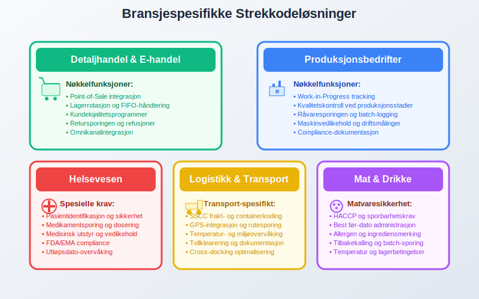
10.3 Servicebedrifter
Tjenesteyting med strekkoder:
- Prosjektsporing og tidsregistrering
- Utstyrslån og retur-tracking
- Kundeservice og support-tickets
- Konsulentresurser og fakturering
Seksjon 11: Utfordringer og Risikohåndtering
11.1 Tekniske Utfordringer
Vanlige problemer og løsninger:
- Skanningsproblemer: Skitne eller skadede etiketter
- Systemintegrasjon: Compatibility issues
- Nettverksproblemer: Ustabile tilkoblinger
- Backup-løsninger: Manual override-funksjoner
11.2 Organisatoriske Utfordringer
Menneskelige faktorer:
- Motstand mot endring fra ansatte
- Opplæringsbehov og kompetanseutvikling
- Arbeidsflytendringer og tilpasninger
- Kvalitetssikring av nye prosesser
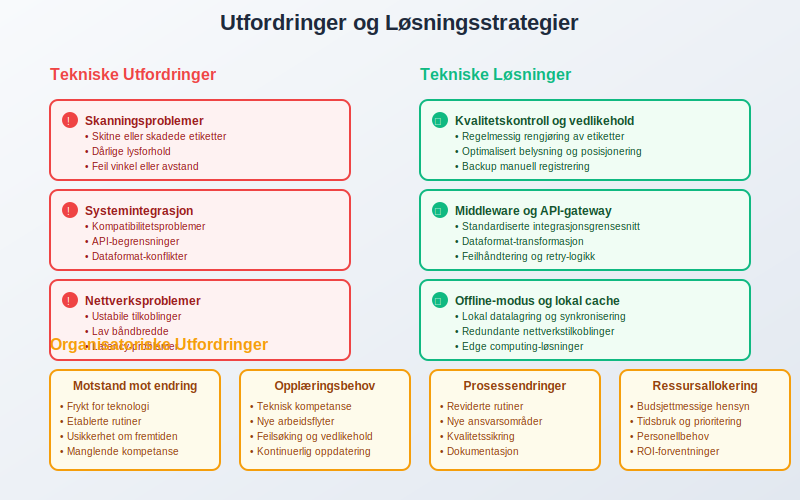
11.3 Sikkerhet og Risiko
Beskyttelse mot trusler:
- Dataintegritets og manipulation
- Cybersikkerhet ved nettverkstilkobling
- Fysisk sikkerhet av skannerutstyr
- Business continuity ved systemfeil
Seksjon 12: Måling og Optimalisering
12.1 Nøkkelindikatorer (KPI)
Målbare resultater av strekkodebruk:
| KPI | Målemetode | Målsetting |
|---|---|---|
| Skanningsnøyaktighet | Feilrate per 1000 skann | < 0.1% |
| Registreringstid | Sekunder per transaksjon | < 5 sekunder |
| Lagerrotasjon | Omsettingsgrad | Forbedring 10-20% |
| Kostnadsbesparelse | NOK per måned | ROI > 20% |
12.2 Kontinuerlig Forbedring
Systematisk optimalisering:
- Månedlige ytelsesrapporter
- Kvartalsvis evaluering av prosesser
- Årlig teknologivurdering
- Kontinuerlig brukertraining
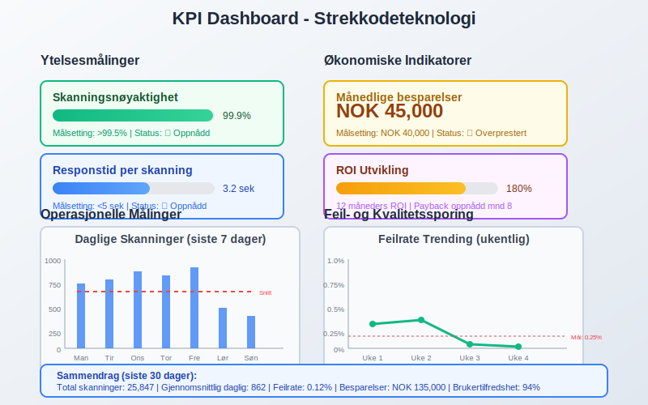
12.3 Benchmarking
Sammenligning med beste praksis:
- Bransjestandarder og benchmarks
- Leverandørsammenligninger
- ROI-målinger mot andre teknologier
- Kundestilfredshetsmålinger
Seksjon 13: Fremtidige Utviklingsmuligheter
13.1 Teknologisk Evolusjon
Kommende innovasjoner:
- 3D-strekkoder for økt informasjonskapasitet
- Biometriske integrasjoner for sikkerhet
- Augmented Reality for visuell veiledning
- Voice-aktivert scanning og kontroll
13.2 Markedstrender
Bransjeutvikling:
- Økt standardisering på tvers av bransjer
- Miljøvennlige etiketter og materialer
- Global harmonisering av koding-standarder
- Integration med bærekraftsrapportering
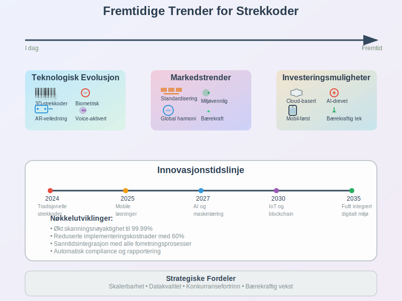
13.3 Investeringsmuligheter
Strategiske satsninger:
- Cloud-baserte løsninger for skalerbarhet
- AI-drevne analyser og innsikter
- Mobil-første tilnærminger
- Bærekraftige teknologier og prosesser
Konklusjon
Strekkoder representerer en fundamental teknologi som har revolusjonert moderne regnskapsføring og forretningsdrift. Gjennom automatisering av dataregistrering og integrasjon med regnskapssystemer, tilbyr strekkoder:
- Dramatisk forbedret nøyaktighet sammenlignet med manuell registrering
- Betydelig tidsbesparelse i administrative prosesser
- Bedre internkontroll og sporbarhet
- Sanntids innsikt i lager og økonomiske data
For organisasjoner som ønsker å:
- Modernisere sine regnskapsprosesser
- Redusere feil og øke datakvalitet
- Forbedre effektivitet i daglige operasjoner
- Styrke compliance med regelverket
Strekkodeteknologi tilbyr en kostnadseffektiv og skalerbar løsning som kan tilpasses ulike bedriftsstørrelser og bransjer.
Ved planlegging av implementering er det kritisk å:
- Gjennomføre grundig behovsanalyse før teknologivalg
- Sikre proper systemintegrasjon med eksisterende regnskapssystemer
- Investere i opplæring og endringsledelse
- Etablere klare KPI-er for å måle suksess
I fremtiden vil strekkoder continue å evolusionere med integrasjon av AI, IoT og mobile teknologier, som vil skape enda mer intelligent og automatiserte regnskapsløsninger. Organisasjoner som investerer i disse teknologiene i dag, posisjonerer seg for fortsatt vekst og konkurransefordeler i det digitale markedet.
Strekkoder er ikke bare et verktøy for effektivisering - de er en strategisk investering i organisasjonens digitale transformasjon og fremtidige bærekraft.